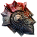

Открыть в интерактивной вики →
| Требуемый уровень | 60 |
|---|---|
| Редкость | Психорар |
| Улучшения | звёзды, орбы, осколки |
| Тип | Щиты |
| Цена | 1 200 000 |
| Ремонт | 9kk |
| Заряды | 3000 |
| Вместимость дрифов | 10 |
| Требуемая ловкость | 60 |
| Требуемый класс | Рыцарь |
| Здоровье | 150 |
| Мана | 40 |
| Выносливость | 50 |
| Сопр. рубящим | 35 |
| Сопр. дробящим | 35 |
| Сопр. колющим | 35 |
| Сопр. огню | 15 |
| Сопр. холоду | 15 |
| Сопр. энергии | 15 |
| Сопр. менталу | 15 |